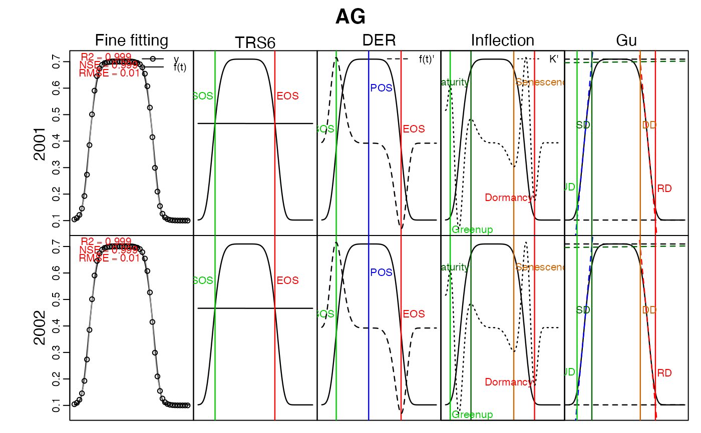

Get curve fitting data.frame
get_fitting(x)
# S3 method for list
get_fitting(x)
# S3 method for fFITs
get_fitting(x)fFITs object returned by curvefit(), or list of fFITs objects
library(phenofit)
# simulate vegetation time-series
FUN = doubleLog.Beck
par = c( mn = 0.1, mx = 0.7, sos = 50, rsp = 0.1, eos = 250, rau = 0.1)
t <- seq(1, 365, 8)
tout <- seq(1, 365, 1)
y <- FUN(par, t)
methods <- c("AG", "Beck", "Elmore", "Gu", "Zhang") # "Klos" too slow
fit <- curvefit(y, t, tout, methods) # `fFITs` (fine-fitting) object
fits <- list(`2001` = fit, `2002` = fit) # multiple years
l_param <- get_param(fits)
d_GOF <- get_GOF(fits)
d_fitting <- get_fitting(fits)
l_pheno <- get_pheno(fits, "AG", IsPlot=TRUE)
